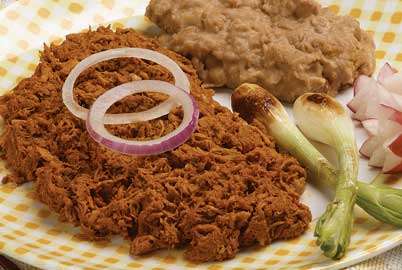

Ingredientes
- 1 kg de pulpa de cerdo cortada en trozos
- 8 chiles ancho asados
- 1 cebolla o 2 cebollines
- 8 dientes de ajo
- 2 tazas de jugo de naranja
- 1/4 de taza de vinagre blanco
- 1 cucharadita de orégano molido
- Sal y Pimienta al gusto
Elaboración (Pasos)
- Cocina la carne en el jugo de naranja con 2 de taza de agua y sal hasta que esté suave; déjala enfriar y deshébrala.
- Remoja los chiles en el vinagre durante 10 minutos. Lícualos con la cebolla, el ajo, sal y orégano (también el vinagre).
- Fríe la carne en su propia grasa, vierte la salsa, rectifica la sazón y cocina hasta que suelte el hervor.
¡Y listo para disfrutar!